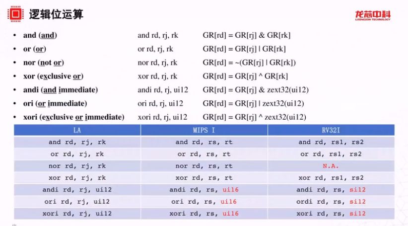
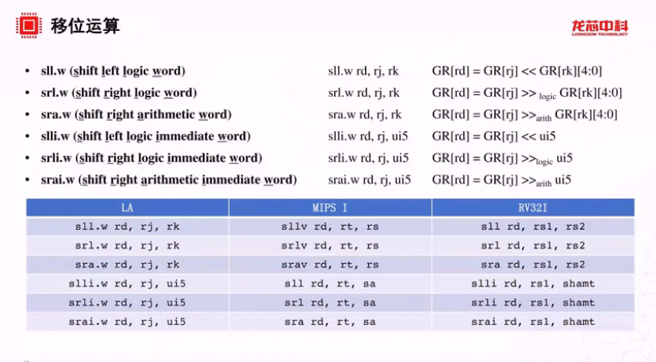
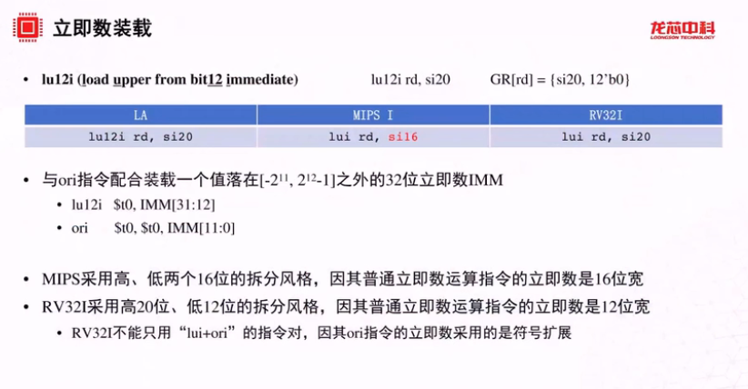
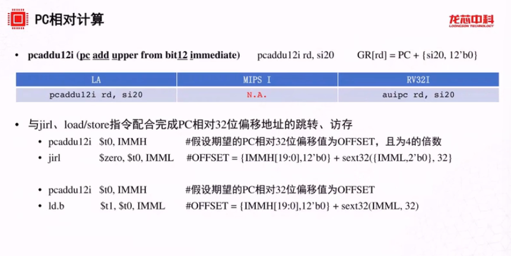
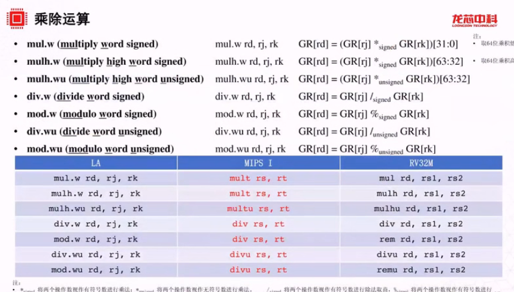
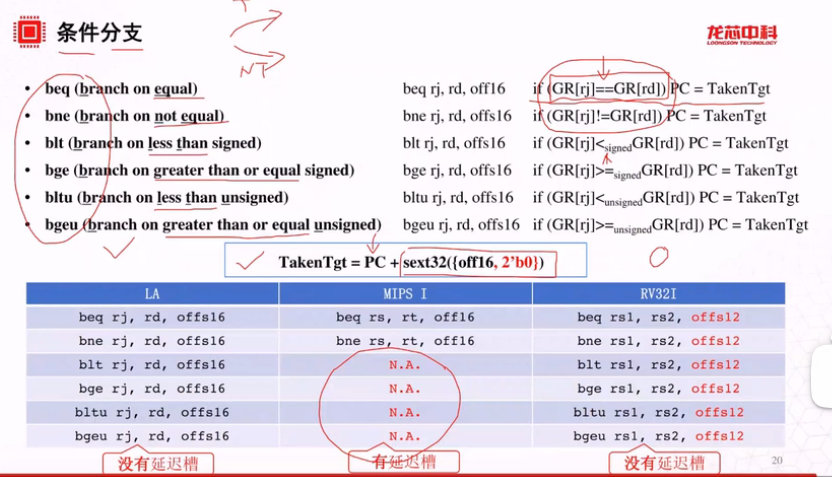

sltui rd, rj, si12 符号数有符号扩展到32位再用无符号比较
slti rd, rj, si12 符号数有符号扩展到32位再用有符号比较
 逻辑右移补0，算术右移补符号位
逻辑左移补0
指令的立即数低位填0，存入寄存器中
与ori搭配的意义在于先用lu12i装载高20位，再用ori装载低12位
  分支延迟槽 (Branch delay slot)，简单地说就是位于分支指令后面的一条指令，不管分支发生与否其总是被执行，而且位于分支延迟槽中的指令先于分支指令提交 (commit)。